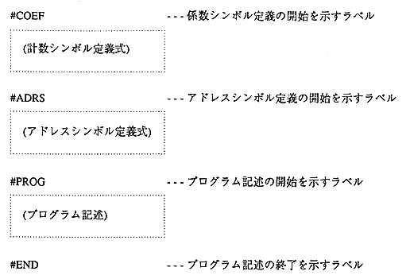

Return to previous page ｜ Return to menu ｜ Go to next page
-
Source code configuration (format)
-
Structure and format
The configuration and format of - dAsms source code is shown below.

-
● Comment
-
- In the source code, a comment can begin with the symbol “'” and continue to the end of the line (new line). dAsms ignores this.
- Comments can be placed anywhere on the source code.
Return to previous page ｜ Return to menu ｜ Go to next page